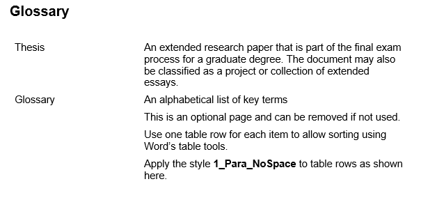
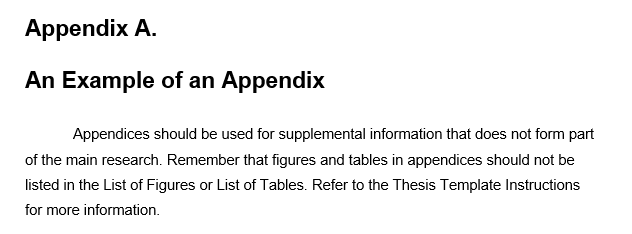
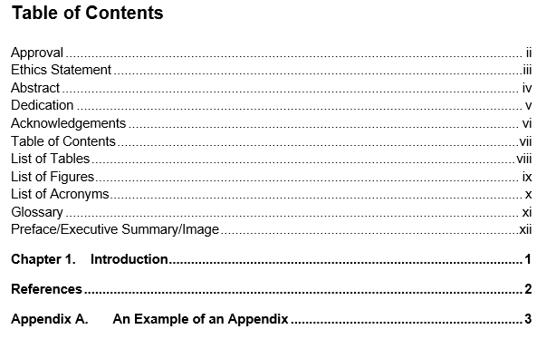

In my own lay-person definition of the word 'trope' in the context of TVTropes, tropes are recurring features in film, literature, games and even advertisements. Because they are recurring, they can be used as a shorthand to convey meaning, symbolise themes and ideas, deconstruct, parody, or pay homage to itself. It is fun to examine these tropes because it means we are able to discover new things about a given story. Tropes lie within the world of meta, and everybody loves a good reference (whether it it self-referential or referencing external matter). Plus, it helps that tvtropes is written in an openly fun, tongue-in-cheek manner. You get the fun of some analysis without getting lost in the technical literary jargon (and instead get lost in tvtrope's own defined terms).
All this talk of meta makes the translation of the site to a book important. It must embody this idea, because even though you can't put hyperlinks in a book (there are many external links that provide context for discussion), you can translate other forms of it.
There aren't a lot of fiction that use footnotes for creative purposes. But they do exist. Take The Curious Incident of the Dog in the Night-time, The Bartimaeus Sequence...uh, I've only read those two.
Both books use footnotes as a narrative device. For the djinn protagonist in the Bartimaeus series, it's "due to the fact that he has multiple layers of conscious thought". For Christopher, who has Asperger's Syndrome, there are also images and diagrams that demonstrate the subject he talks about, and the chapters are named in ascending prime numbers.
  I chose footnotes over other similar parts of a book like appendices, contents pages and glossaries was because of its distinctiveness compared to others and its inherent ability to carry more information.